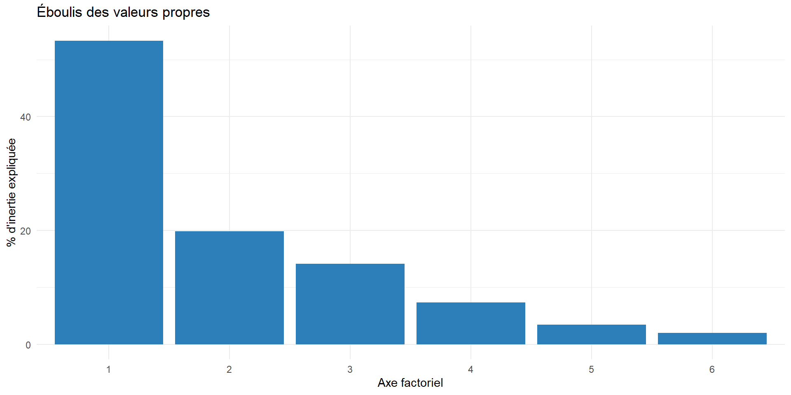

Analyse en Composantes Principales (ACP)
Nuages pesants, inertie et composantes principales
Claire Borrelli
2023-12-17
Pourquoi l’ACP est une idée intéressante et utile
1. Le nuage de points pesants
Nuage de points pesants
Un nuage de points pesants est un ensemble \(N = \{(x_i, p_i) : i = 1, \dots, n\}\) où :
- \(x_i \in \mathbb{R}^p\) : une observation décrite par \(p\) variables
- \(p_i > 0\) : le poids de l’observation \(i\), avec \(\sum_{i=1}^n p_i = 1\)
Exemple — 3 observations dans \(\mathbb{R}^2\) :
\[x_1 = (2,3),\ p_1=0.4 \qquad x_2 = (1,5),\ p_2=0.3 \qquad x_3 = (4,2),\ p_3=0.3\]
Les matrices \(D\) et \(X\)
\(D\) : matrice diagonale \(n \times n\) des poids — \(X\) : matrice \(n \times p\) des données
\[D = \begin{bmatrix} 0.4 & 0 & 0 \\ 0 & 0.3 & 0 \\ 0 & 0 & 0.3 \end{bmatrix} \qquad X = \begin{bmatrix} 2 & 3 \\ 1 & 5 \\ 4 & 2 \end{bmatrix}\]
Le triplet \((X, D, M)\)
- \(X\) : matrice des données (\(n \times p\))
- \(D\) : matrice de poids (diagonale, \(\sum p_i = 1\))
- \(M\) : métrique — matrice \(p \times p\), symétrique définie positive, qui définit les distances entre observations
Cas courants :
- Poids égaux : \(D = \tfrac{1}{n} I_n\)
- Métrique euclidienne : \(M = I_p\)
- Métrique normalisée : \(M = \text{diag}(1/s_1^2, \dots, 1/s_p^2)\) — corrige les différences d’échelle entre variables
Pourquoi normaliser ?
Avec \(M = \text{diag}(1/s_j^2)\), les variables à faible variance (peu dispersées) reçoivent un poids plus fort, et inversement.
Propriété clé : les distances calculées sur les données brutes avec la métrique \(D_{1/s}\) sont identiques aux distances calculées sur les données réduites (centrées-réduites) avec la métrique identité.
\(\Rightarrow\) normaliser une variable ou changer de métrique, c’est la même opération.
Centre de gravité
Le centre de gravité du nuage \(N\) est
\[g = \sum_{i=1}^n p_i x_i\]
Le nuage centré a pour coordonnées \(x_i - g\).
2. Inertie
Inertie par rapport à un point / un sous-espace
Par rapport à un point \(a\) : \[I_a = \sum_{i=1}^n p_i\, d_M^2(a, x_i)\]
Par rapport au centre de gravité (\(I := I_g\)) : joue le rôle central dans les méthodes factorielles.
Par rapport à un sous-espace affine \(F\) : \[I_F = \sum_{i=1}^n p_i\, d_M^2(F, x_i)\]
Théorème de Huygens
Pour tout sous-espace affine \(F\) de \(\mathbb{R}^p\) :
\[I_F = I_{F_g} + d_M^2(a, g)\]
où \(F_g\) est le sous-espace parallèle à \(F\) passant par \(g\), et \(a\) la projection \(M\)-orthogonale de \(g\) sur \(F\).
Conséquence : le sous-espace parallèle à \(F\) d’inertie minimale est celui qui passe par le centre de gravité.
Inertie totale : expression matricielle
En notant \(V = X^\top D X\) la matrice de variances-covariances :
\[I = \text{tr}(VM)\]
Et le nuage \(N\) (individus) et le nuage \(N^*\) (variables, tableau transposé) ont la même inertie totale.
3. Principe de l’ACP
Formulation du problème
L’ACP cherche une représentation approchée du nuage \(N \subset \mathbb{R}^p\) dans un sous-espace de dimension réduite \(k < p\).
On cherche \(E_k\), sous-espace de dimension \(k\), qui minimise l’inertie perdue \(I_{E_k^\perp}\) — ce qui équivaut, l’inertie totale étant fixe, à maximiser l’inertie expliquée \(I_{E_k^\perp}\)…
Formellement : \(E_k\) est optimal s’il maximise l’inertie expliquée parmi tous les sous-espaces de dimension \(k\).
Construction séquentielle
Deux lemmes permettent de construire les axes un à un :
- Lemme d’inclusion : le sous-espace optimal de dimension \(k\) contient le sous-espace optimal de dimension \(k-1\)
- Lemme de construction : chercher \(E_k\) optimal \(\supseteq E_{k-1}\) revient à chercher une droite \(\Delta u_k\), \(M\)-orthogonale à \(E_{k-1}\), qui minimise \(I_{\Delta u_k}\)
\(\Rightarrow\) on peut construire les axes un par un, par ordre d’importance.
4. Résolution du problème
Recherche du premier axe
On cherche \(u_1\) unitaire (\(u_1^\top M u_1 = 1\)) qui maximise l’inertie expliquée :
\[u_1 = \arg\max_u\ u^\top MVMu \quad \text{s.c.}\quad u^\top Mu = 1\]
Par les multiplicateurs de Lagrange, on obtient :
\[MVMu_1 - \lambda_1 Mu_1 = 0 \quad\Longleftrightarrow\quad VMu_1 = \lambda_1 u_1\]
\(u_1\) est donc un vecteur propre de \(VM\), associé à sa plus grande valeur propre \(\lambda_1\). L’inertie expliquée par cet axe vaut \(\lambda_1\).
Généralisation : les axes factoriels
Lemme 2.3.1 — Les axes \(\Delta u_1, \dots, \Delta u_p\) sont les axes factoriels :
- \(u_k\) = vecteur propre de \(VM = X^\top D X M\) associé à la \(k\)-ème plus grande valeur propre \(\lambda_k\)
- L’inertie expliquée par \(\Delta u_k\) vaut \(\lambda_k\), et \(I = \sum_{k=1}^p \lambda_k\)
- Le % d’inertie expliqué par \(E_k\) est \(\dfrac{100 \cdot (\lambda_1 + \dots + \lambda_k)}{I}\)
Si \(r = \text{rang}(X)\), alors \(\lambda_1, \dots, \lambda_r > 0\) et \(\lambda_{r+1} = \dots = \lambda_p = 0\).
5. Composantes principales & indicateurs
Composantes principales
La \(k\)-ème composante principale \(C_k = XMu_k\) donne les coordonnées des \(n\) observations sur l’axe \(\Delta u_k\).
Propriétés : les \(C_k\) sont centrées, de variance \(\lambda_k\), et non corrélées entre elles.
Formule de reconstitution — avec \(s < r\) composantes : \[X \approx \tilde X = \sum_{k=1}^s C_k u_k^\top\]
Indicateurs de qualité
Qualité de représentation d’une observation sur l’axe \(k\) : \[\cos^2(i,k) = \left(\frac{c_{ik}}{\|x_i\|_M}\right)^2\]
Contribution d’une observation à la construction de l’axe \(k\) (repère les observations atypiques) : \[\text{ctr}(i,k) = \frac{p_i c_{ik}^2}{\lambda_k}\]
Représentation des variables
On peut projeter les variables initiales sur les axes factoriels et calculer leur corrélation avec chaque composante :
\[\text{cor}(j,k) = \frac{d_{kj}}{\|X_j\|_D} \in [-1, 1]\]
Ces corrélations se visualisent sur le cercle des corrélations.
L’ACP en pratique
- Description des données
- Statistiques descriptives univariées et bivariées
- Choix des éléments actifs et de la métrique
- Choix du nombre d’axes (% d’inertie expliquée)
- Interprétation des axes (sens, observations bien représentées, atypiques)
- Conclusion
6. Exemple appliqué en R
Le jeu de données : swiss
Indicateurs socio-économiques et de fécondité pour 47 provinces francophones de Suisse (1888) — inclus nativement dans R.
'data.frame': 47 obs. of 6 variables:
$ Fertility : num 80.2 83.1 92.5 85.8 76.9 76.1 83.8 92.4 82.4 82.9 ...
$ Agriculture : num 17 45.1 39.7 36.5 43.5 35.3 70.2 67.8 53.3 45.2 ...
$ Examination : int 15 6 5 12 17 9 16 14 12 16 ...
$ Education : int 12 9 5 7 15 7 7 8 7 13 ...
$ Catholic : num 9.96 84.84 93.4 33.77 5.16 ...
$ Infant.Mortality: num 22.2 22.2 20.2 20.3 20.6 26.6 23.6 24.9 21 24.4 ...Statistiques descriptives
Fertility Agriculture Examination Education
Min. :35.00 Min. : 1.20 Min. : 3.00 Min. : 1.00
1st Qu.:64.70 1st Qu.:35.90 1st Qu.:12.00 1st Qu.: 6.00
Median :70.40 Median :54.10 Median :16.00 Median : 8.00
Mean :70.14 Mean :50.66 Mean :16.49 Mean :10.98
3rd Qu.:78.45 3rd Qu.:67.65 3rd Qu.:22.00 3rd Qu.:12.00
Max. :92.50 Max. :89.70 Max. :37.00 Max. :53.00
Catholic Infant.Mortality
Min. : 2.150 Min. :10.80
1st Qu.: 5.195 1st Qu.:18.15
Median : 15.140 Median :20.00
Mean : 41.144 Mean :19.94
3rd Qu.: 93.125 3rd Qu.:21.70
Max. :100.000 Max. :26.60 Calcul de l’ACP (données centrées-réduites)
Importance of components:
PC1 PC2 PC3 PC4 PC5 PC6
Standard deviation 1.7888 1.0901 0.9207 0.66252 0.45225 0.34765
Proportion of Variance 0.5333 0.1981 0.1413 0.07315 0.03409 0.02014
Cumulative Proportion 0.5333 0.7313 0.8726 0.94577 0.97986 1.00000Ici, la métrique \(M = \text{diag}(1/s_j^2)\) correspond à scale. = TRUE (normalisation des variables).
Éboulis des valeurs propres

Nuage des individus (Δu₁, Δu₂)

Cercle des corrélations
cor_var <- as.data.frame(cor(swiss, acp$x[, 1:2]))
cor_var$variable <- rownames(cor_var)
theta <- seq(0, 2*pi, length.out = 100)
cercle <- data.frame(x = cos(theta), y = sin(theta))
ggplot() +
geom_path(data = cercle, aes(x, y), color = "grey70") +
geom_segment(data = cor_var, aes(x = 0, y = 0, xend = PC1, yend = PC2),
arrow = arrow(length = unit(0.2, "cm")), color = "#e34a33") +
geom_text(data = cor_var, aes(PC1, PC2, label = variable), vjust = -0.5, size = 3) +
coord_equal() +
labs(x = "Composante 1", y = "Composante 2", title = "Cercle des corrélations") +
theme_minimal()
Interprétation
- Axe 1 : oppose les provinces à forte fécondité / agriculture aux provinces plus éduquées et urbanisées
- Axe 2 : structuré par la pratique religieuse (
Catholic) et la mortalité infantile - Les provinces proches sur le graphique ont des profils socio-économiques similaires
- Vérifier le % d’inertie expliquée par les 2 premiers axes avant d’interpréter (
summary(acp))
7. Visualiser l’ACP en animation
L’intuition derrière la recherche du premier axe
Retour sur la toute première étape de la résolution (partie 4) : on cherche l’axe qui maximise l’inertie expliquée — c’est-à-dire la variance du nuage projeté dessus.
L’animation ci-dessous (réalisée avec Manim, la bibliothèque créée par Grant Sanderson pour 3Blue1Brown) montre :
- un axe qui tourne autour du nuage de points
- la variance expliquée qui monte et descend selon l’orientation de l’axe
- l’axe se stabilise sur la direction de variance maximale : le premier axe principal
- le second axe, orthogonal au premier, puis la projection des points
La vidéo
Conclusion
- L’ACP transforme des variables corrélées en composantes non corrélées, ordonnées par inertie expliquée
- Le choix de la métrique (normalisation) change fondamentalement les résultats
- Toujours interpréter avec les indicateurs de qualité (cos², contribution) plutôt que le graphique seul
- Une animation peut rendre visible ce que l’algèbre linéaire décrit : la recherche d’une direction de variance maximale
Comment générer la vidéo
Le fichier rendu se trouve dans
media/videos/acp_projection/1080p60/ACPProjection.mp4— il suffit de le copier versresources/manim/acp_projection.mp4pour qu’il s’affiche sur cette slide.